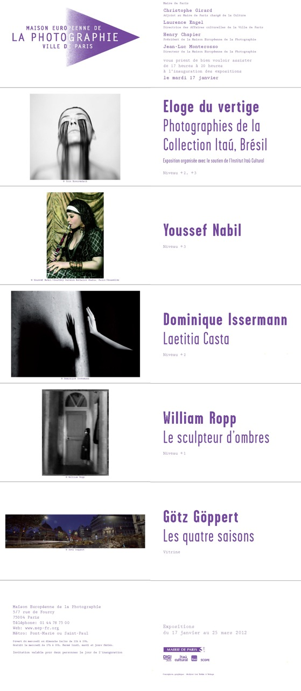

No começo de janeiro Guilherme Maranhão enviou um convite sobre a exposição que iria participar "O Elogio da Vertigem: Coleção Itaú de Fotografia Brasileira", que (então) aconteceria na Maison Européenne de la Photographie, entre os dia 17 de janeiro de 2012, em Paris.

O email-convite evoluiu para um dialógo entre eu, ele e Felipe Fonseca. Um dialógo que faz refletir não apenas sobre imagens-vertigens, mas sobre as vertigens-do-tempo: